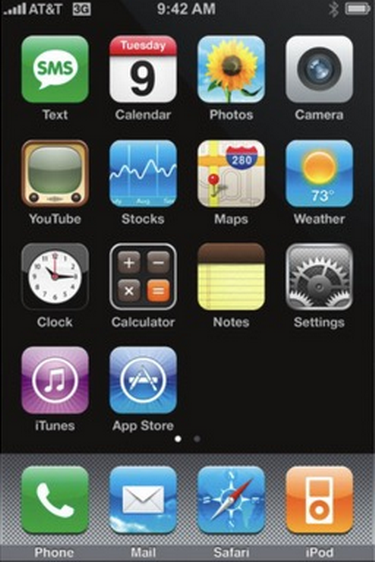

iOS 2
O iPhone OS 2 é o segundo maior lançamento do sistema operacional móvel iOS desenvolvido pela Apple Inc. , sendo o sucessor do iPhone OS 1 . Foi a primeira versão do iOS a suportar aplicativos de terceiros por meio da App Store . O iPhone OS 2.2.1 foi a versão final do iPhone OS 2. Foi sucedido pelo iPhone OS 3 em 17 de junho de 2009.
O iPhone OS 2.0 ficou disponível em 11 de julho de 2008 com o lançamento do iPhone 3G . Dispositivos que executam 1.x podem ser atualizados para esta versão. Esta versão do iOS apresenta a App Store , disponibilizando aplicativos de terceiros para o iPhone e o iPod Touch . Antes do lançamento público do iPhone OS 2.0, a Apple realizou um evento para anunciar o Kit de Desenvolvimento de Software do iPhone OS ("SDK") aos desenvolvedores.

Desenvolvedor Apple Inc.
Modelo de origem Fechado , com componentes de código aberto
lançamento inicial 11 de julho de 2008
Último lançamento 2.2.1 (5H11 / 5H11a) / 27 de janeiro de 2009
Tipo de kernel Híbrido ( XNU )
Licença EULA proprietário, exceto para componentes de código aberto
Anterior iPhone OS 1
Próximo iPhone OS 3
Apps
- Texto
- Youtube
- Relógio
- iTunes
- Calendário
- Ações
- Calculadora
- Loja de aplicativos
- Fotos
- Mapas
- Notas
- Câmera
- Clima
- Definições
Dock Dock
- Telefone
- Enviar
- Safári
- iPod
App Store
A característica mais notável do iPhone OS 2 foi a App Store . Antes desse recurso ser introduzido, a única maneira de instalar aplicativos personalizados no dispositivo era através do jailbreak , o que é altamente desencorajado e não é suportado pela Apple. Havia 500 aplicativos disponíveis para download no lançamento da App Store, embora esse valor tenha crescido dramaticamente desde então. Agora, a App Store tem mais de 2 milhões de aplicativos a partir de 2016.
Mail
O aplicativo Mail teve uma transformação, com e-mails de envio que fornecem uma capacidade sempre ativa. Ele também suporta anexos do Microsoft Office , bem como anexos do iWork . Outros novos recursos, incluindo suporte para BCC , exclusão de vários e-mails e a capacidade de selecionar um e-mail de saída.
Contatos
O aplicativo Contatos agora tem um novo ícone da tela inicial que está disponível apenas no iPod Touch. Junto com o lançamento é a capacidade de pesquisar contatos sem ser pesquisado um por um, bem como a capacidade de importação de contatos do SIM.
Mapas
Novos recursos foram adicionados ao aplicativo do Google Maps na atualização de software do iPhone OS 2.2. Entre os recursos adicionados estão a inclusão do Google Street View , as rotas para o transporte público e durante a caminhada e a capacidade de exibir o endereço de um marcador ignorado.
Calculadora
Quando o dispositivo está no modo paisagem, o aplicativo calculadora exibe uma calculadora científica. Além disso, o ícone do aplicativo é atualizado.
Configurações
As configurações agora tinham a capacidade de ativar o Wi-Fi novamente no modo Avião, bem como a capacidade de ativar / desativar os Serviços de Localização dentro do aplicativo.
Recepção
Rene Ritchie, da iMore , disse: "No geral, o iPhone Firmware 2.0 é uma conquista incrível que realmente coloca o iPhone no mesmo patamar do Apple II e Mac como uma das grandes revoluções da tecnologia moderna. Ele leva além do simples Phone + iPod ou até mesmo smartphone, e faz com que seja o principal candidato para a próxima grande mudança na computação ". No entanto, eles criticaram por ter problemas de estabilidade e lentidão geral. Macworld disse: "O software do iPhone 2.0 está cheio do tipo de refinamentos que você esperaria de um produto da Apple de segunda geração. O iPhone ainda não é perfeito, e desejamos que a Apple tenha resolvido algumas falhas persistentes". mas é um bem-vindo passo em frente para o que já foi indiscutivelmente a melhor plataforma móvel no mercado ".